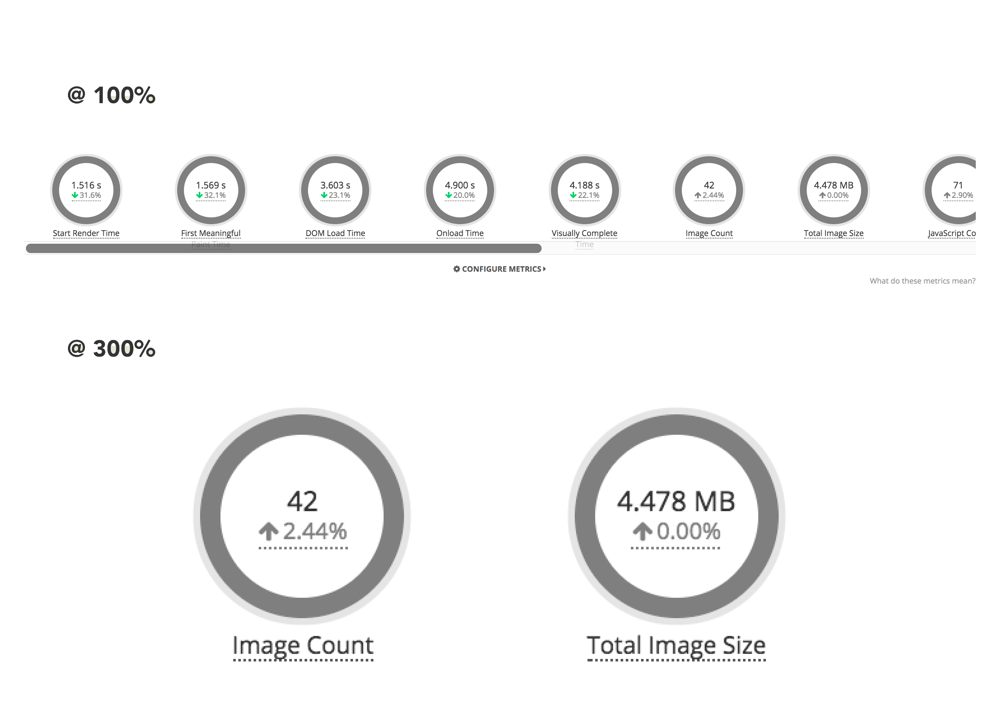
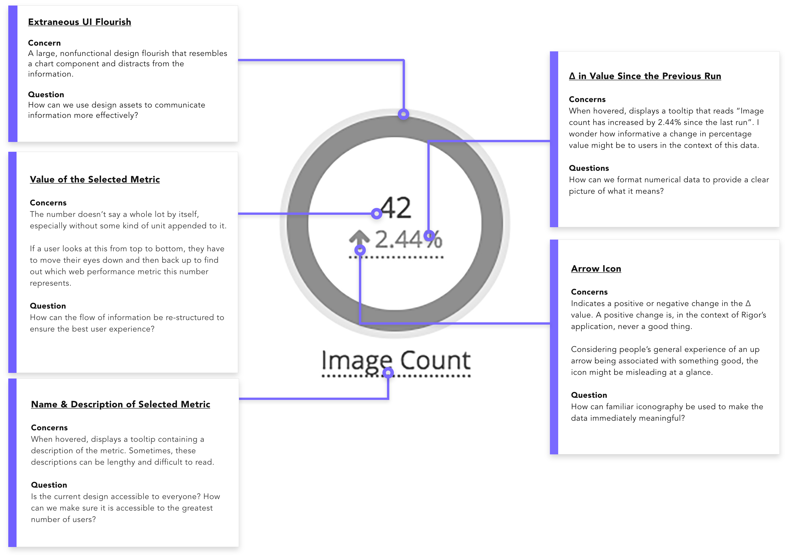
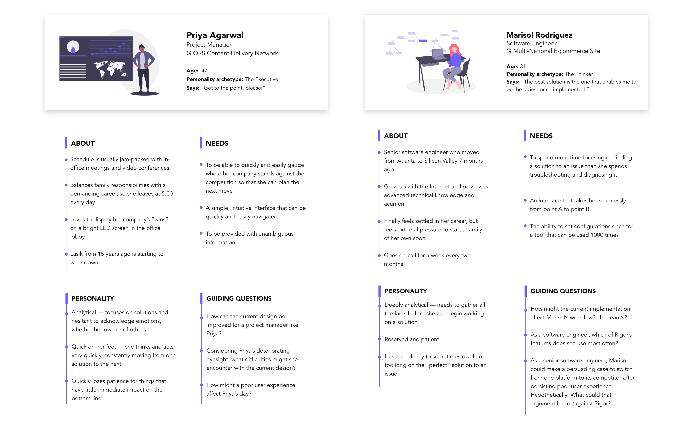
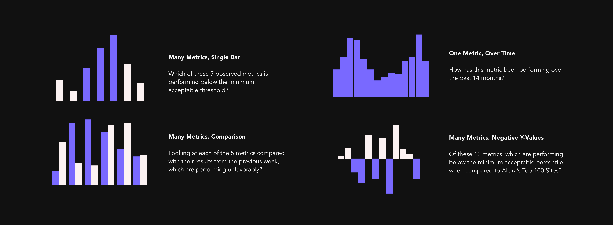
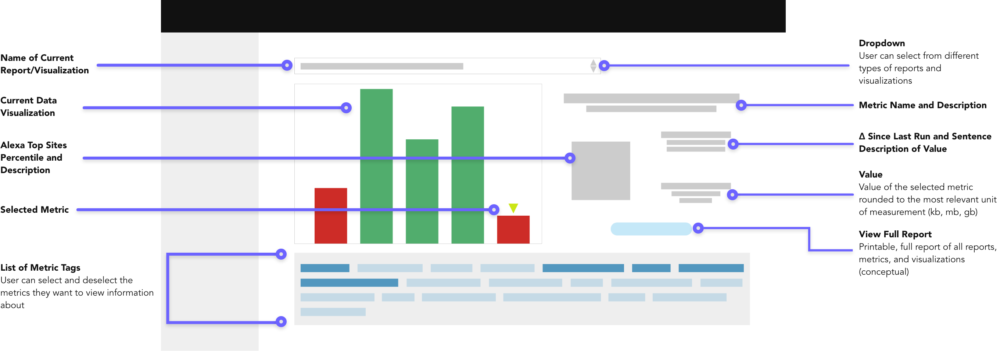
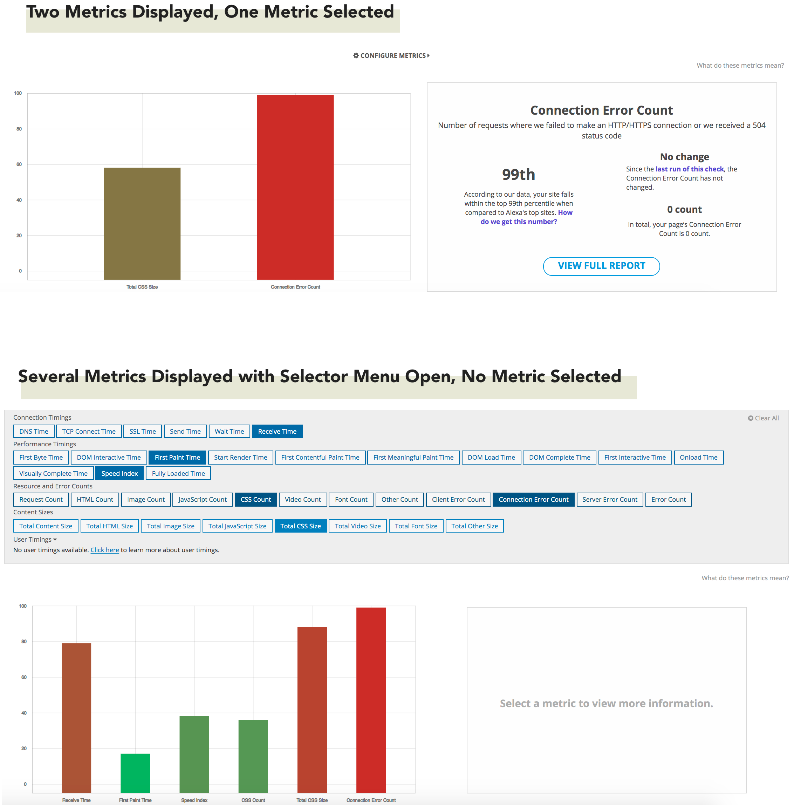
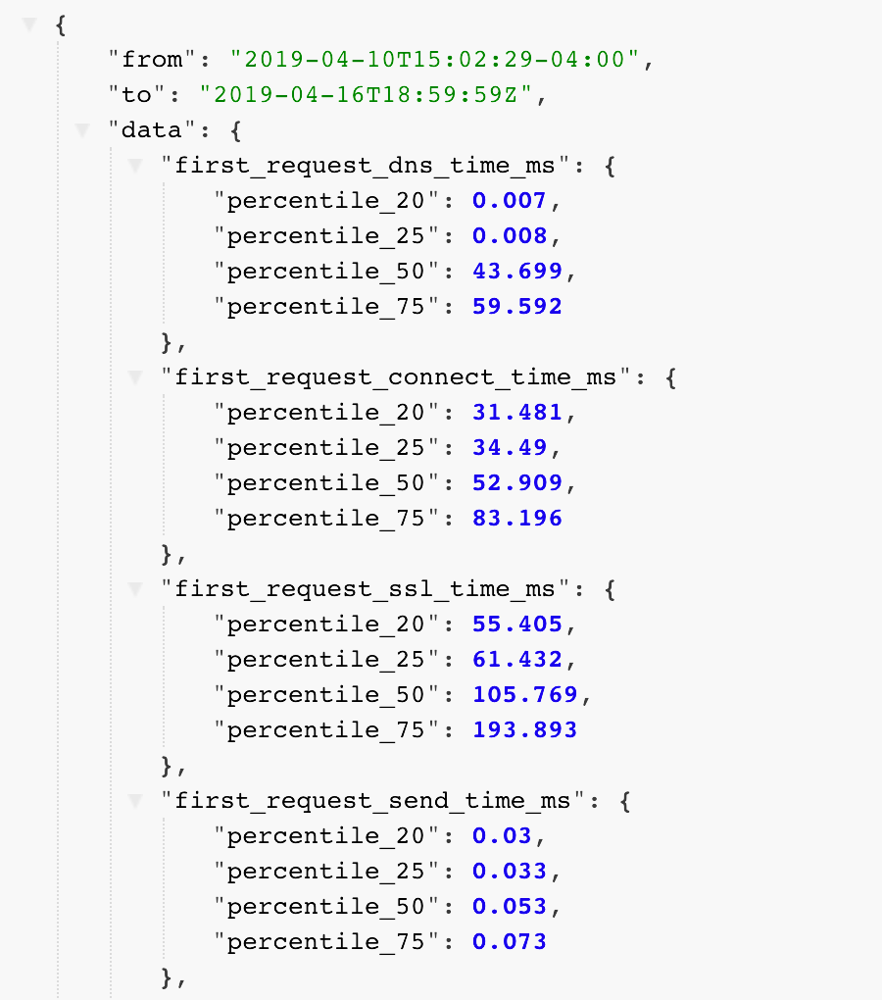

UX/Software Engineering, Data Viz, 2019
Internship at Rigor
Background
What is Rigor?
Rigor is a small SaaS company located in Atlanta, Georgia providing users with powerful tools to optimize and monitor their website's performance. With Rigor, users can access metrics related to user experience, APIs, and uptime, benchmark their site's performance against industry leaders, and diagnose and repair technical issues or answer business questions.
A creative and open-ended solo project.
During the concluding week of my internship, I was given an opportunity to pursue my design
interests via a 2-week solo project. The instruction was simply to find an area of Rigor's app
that could be improved and design/develop a functional prototype to support it. At the end of
the two weeks, I would present the idea to
the engineering team.
The goal was not to deliver a production-ready new feature, but to spark discussion about user
needs while accounting for how modern web design paradigms can be applied to the existing app.
Analytics redesign.
Reimagining existing analytics.
Because of my own concerns about it and a few mentions in Rigor’s technical support Slack
channel, I decided to try to modernize the following analytics chart:

The chart appears on the Results page of one of Rigor’s most popular features. It displays
information about various performance metrics based on the user’s custom configuration, then
compares each metric with its results from the previous run.
Identifying pain points.
My first step was to identify the major pain points of the current implementation. Due to the
2-week time constraint, I wasn't able to conduct user interviews to understand the customers'
mindsets, however, I was able to rely on my
supervisor, coworkers, and information gleaned from product tickets in JIRA
for insight about possible user frustrations.
Because the prototype would be programmed into the existing React application, I
figured that the most intuitive way to plan this project was to break the current chart down
into its most basic components while proposing guiding questions along the way.

After doing this, I could construct a foundation for the information architecture. I listed
handful of painpoints that would serve as
milestones while designing and developing this project:
- Appearance of horizontal scrollbar when a user selects too many metrics
- Poor information hierarchy that makes it difficult for users to prioritize important metrics or derive meaningful information from the page at a glance
- Unnecessary UI components, like tooltips, flourishes, and links that clutter the page and distract from the story the data should be telling
- Crowded layout with small text may be inaccessible to users with poor vision
Understanding users.
With information gathered throughout the semester from cross-departmental meetings, customer support tickets, and discussions with my supervisor, I synthesized two major personas that reflected Rigor's primary user base. These personas are based around age, level of experience with technology, role, and personality, with a few hypothetical questions to guide the design process.
Charts that answer business questions.
My favorite part of this project was figuring out how charts can be used to
answer business questions, rather than exist only for the sake of interactivity and
visualization. Because
bar charts are widely used and the data from this project could be plotted along an X and Y axis
easily, I stuck with using them for this prototype.
With more time, I would have loved to have explored these questions further.

Low-fidelity mockups.

Final Prototype

Prototype implementation pitfalls.
D3 and React manipulate the DOM differently, which meant I had to brute-force some (arguably) icky code to build the interactivity and styling of the charts. With more time, I would have researched alternative libraries or methods of integrating the two libraries. From my understanding, this is a common problem with many solutions.
Final Thoughts
Normalizing Data

At the beginning, I had some difficulty visualizing the data in a way that was immediately
meaningful. The data is all displayed in wildly incompatible units like bytes, seconds, and
counts, so what might be the ideal file count would almost certainly be an impossible byte size,
and would not be helpful if displayed on the same graph.
After speaking with my supervisor, he suggested that the data might be more meaningful to users
if it was converted into percentiles based on Amazon Web Services' Alexa Top Sites data.
To break down the percentile ranks from the 0th - 99th, we configured AWS to generate a JSON
file with discrete data.
Now that I had the data in percentile ranks, I quickly encountered another issue: I would have
to convert up to 3,860 unique values into individual percentiles. To accomplish this, I wrote an
algorithm that normalized those values and mapped them to a D3 chart.
What I'd do next time...
Working on a multidisciplinary project within a limited timeframe was interesting because
it demonstrated the immediate importance of careful planning, research, and teamwork in
software development.
With more time I would:
- Experiment with ways to effectively display data visualizations on mobile devices
- Conduct user interviews and testing to gain additional insights into pain points for future iterations
- Beautify the lefthand information panel with graphics and animations to provide feedback and bring joy to users
- Research additional methods of effective storytelling with data
When designing data analytics reports and visualizations, I learned that it’s important to remember that even the most experienced users of your application don’t have as clear an understanding of the data as you do as an engineer. While bar charts, pie charts, and line graphs are well-known forms of data visualization, extra care must be put in to ensure that they don't simply exist as an eye-catching design component, but to tell meaningful stories about the data.